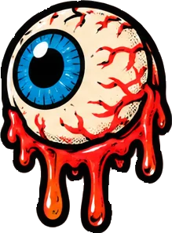
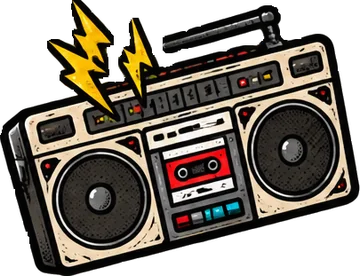
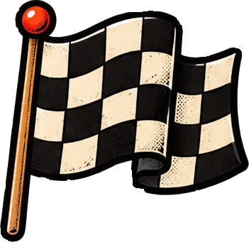
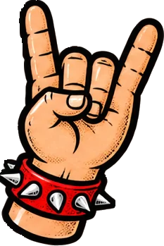
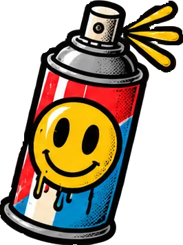
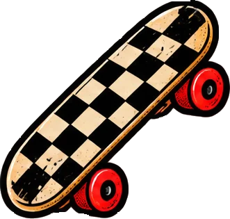
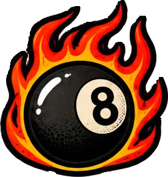

Tres visitantes
Antes de aprender etiquetas, entiende para quién las escribes.

La persona
Ve colores, tamaños y posiciones. Si la cabecera es grande y está arriba, sabe que es la cabecera. El CSS le basta.

El lector de pantalla
Un programa que lee en voz alta la web a personas ciegas o con poca visión. No ve el diseño: solo oye lo que dicen las etiquetas.
El robot
Google, WhatsApp, Instagram… Entran en tu web, leen el HTML y deciden qué título y qué resumen enseñar de ti.
Una analogía: la caja de mudanza
Imagina que te mudas y metes todo en cajas iguales sin escribir nada encima. Tú, que lo has empaquetado, sabes que en la tercera van los platos. Pero el de la mudanza no: para él son veinte cajas idénticas. Eso es una web hecha solo con <div>: a la vista queda bien, pero para quien no la ve son cajas sin rotular.
El HTML semántico es escribir en cada caja qué lleva: «cabecera», «menú», «contenido principal», «pie». No cambia nada de cómo se ve (eso lo sigue haciendo el CSS), pero cambia muchísimo cómo se entiende.
Viene del griego sēmantikós, «que significa». Una etiqueta semántica es una etiqueta que significa algo: <nav> significa «menú»; <div> no significa nada.
¿Y a mí qué me aporta?
- Accesibilidad: en España, cerca de un millón de personas tienen una discapacidad visual. Con un HTML bien etiquetado pueden saltar directamente al menú o al contenido, igual que tú con la vista.
- SEO (posicionamiento en buscadores): Google entiende mejor qué es lo importante de tu página y qué es relleno.
- Compartir: con cuatro etiquetas en el
<head>, tu enlace aparece en WhatsApp con foto, título y resumen. - Código más limpio:
<footer>se lee mejor que<div class="pie-de-pagina-abajo">. Tú dentro de seis meses lo agradecerás. - Teclado: mucha gente navega sin ratón (por lesión, por costumbre o por rapidez). Si tu web se usa con la tecla Tab, la usa todo el mundo.
Tu hoja de ruta de hoy
- Las etiquetasLas 11 piezas de la casa:
header,main,article… Ir - LandmarksCómo «salta» por tu web un lector de pantalla. Ir
- Atributos globales
lang,hidden,titleydata-*. Ir - TecladoTabulación, skip link,
aria-labelytabindex. Ir - SEO y compartirEl escaparate en Google y en WhatsApp. Ir
- ValidarLa ITV del HTML en el W3C. Ir
- PlantillaTodo junto en una página para copiar. Ir
- TestCompruébalo con preguntas y fallos que arreglar. Ir
Estructura semántica
header, nav, main, section, article, aside, footer, address, hgroup, search y div.
El plano de la casa
Una página web es como un piso: tiene recibidor (cabecera), pasillo con señales (menú), salón (contenido principal), habitaciones (secciones), cuadros colgados que se entienden solos (artículos), una estantería auxiliar (barra lateral) y un felpudo con el nombre (pie).
Pulsa cada etiqueta negra del plano para ver su ficha: para qué sirve, una analogía y la regla de oro que no debes olvidar.
La «sopa de divs» frente a la versión que habla
Las dos páginas de abajo se ven exactamente igual con el mismo CSS. La diferencia solo la notan el lector de pantalla y Google. La de la izquierda es la típica «sopa de divs»: todo funciona, pero nada significa nada.
Un <div class="titulo"> grande y en negrita parece un título, pero no lo es. Para el lector de pantalla es texto normal. Los títulos de verdad son <h1>…<h6>, como ya sabes.
Las piezas, una a una
header · la cabecera
Lo que va arriba de la página: logo, nombre de la web, menú principal, buscador. No lo confundas con <head>: el head es la parte invisible (título de la pestaña, metadatos, CSS); el header es la cabecera visible del body. También puede haber un header dentro de un article (el título y la fecha de una noticia).
nav · el menú
Bloques de enlaces importantes para moverse: menú principal, índice de la página, migas de pan. No todo grupo de enlaces es un nav: los tres enlaces legales del pie pueden ir sin él. Si tienes dos nav, ponles nombre con aria-label («Principal», «Índice») para distinguirlos.
main · lo principal
El contenido único de esta página, lo que la diferencia de las demás. La cabecera y el pie se repiten en todas las páginas; el main, no. Solo uno visible por página, y nunca dentro de header, footer, nav, article ni aside.
section · un capítulo
Un bloque temático con su propio título: «Nuestras pizzas», «Horario», «Opiniones». Si no le puedes poner un título que tenga sentido, seguramente es un div.
article · algo que se entiende solo
Un contenido completo e independiente: una noticia, una receta, un comentario, la tarjeta de un producto. La prueba: ¿lo podrías pegar tal cual en otra web y se entendería? Entonces es un article. Puede llevar su propio header y footer.
aside · lo secundario
Contenido relacionado pero que no es lo principal: barra lateral, «artículos relacionados», una nota al margen, publicidad. Si lo quitas, lo principal se sigue entendiendo.
footer · el pie
Autor, copyright, enlaces legales, redes, contacto. Igual que el header, puede haber uno general y otro dentro de cada article (por ejemplo, «Escrito por Ane · 3 comentarios»).
address · la tarjeta de visita
Los datos de contacto de quien firma la página o el artículo: email, teléfono, redes. No sirve para cualquier dirección: la dirección de un restaurante dentro de una lista de restaurantes va en un <p>.
hgroup · título con subtítulo
Junta un título (un solo h1–h6) con uno o varios <p> que hacen de subtítulo o antetítulo. Así el subtítulo no se convierte en un título falso de nivel 2.
search · la zona de búsqueda
Envuelve el formulario de búsqueda (y sus filtros). Es la etiqueta más nueva de la lista (llegó en 2023); en navegadores muy antiguos se usaba <form role="search">, que significa lo mismo.
div · la caja sin rotular
No significa nada, y eso no es malo: es la caja que usas cuando solo necesitas agrupar cosas para darles estilo (una fila de Flex, un envoltorio para centrar). La regla es simple: primero busca la etiqueta con significado; si ninguna encaja, div.
La casa entera, maquetada con Grid
Fíjate: el CSS selecciona directamente header, nav, main, aside y footer. Con etiquetas semánticas casi no necesitas clases.
Un article con su propio header y footer
Una noticia es un article: dentro lleva su cabecera (título y fecha con <time>) y su pie (autora). Que haya varios header y footer en la página es correcto.
search: la zona de búsqueda
El <search> envuelve el formulario. El <label> lo oculta el CSS solo a la vista (lo verás en la sección de teclado), así que el lector de pantalla sigue diciendo «Buscar en la carta».
Minijuego: ¿qué etiqueta le pondrías?
Te describo un trozo de web y tú eliges la etiqueta. Hay 10 casos. No cuenta para la nota: es para entrenar el ojo.
Landmarks y lectores
Cómo «ve» tu web alguien que no la ve.

¿Qué es un lector de pantalla?
Es un programa que convierte lo que hay en la pantalla en voz (o en braille, con una línea braille). Los más usados:
- NVDA en Windows: gratuito y de código abierto. Es el que puedes instalar hoy para probar.
- JAWS en Windows: de pago, muy usado en empresas.
- VoiceOver: viene de serie en Mac, iPhone y iPad.
- TalkBack: viene de serie en Android.
Lo importante: una persona con lector de pantalla no lee la página de arriba abajo, igual que tú no lees un periódico palabra por palabra. Salta: «llévame al menú», «dame la lista de títulos», «llévame al contenido principal». Para poder saltar necesita puntos de referencia: los landmarks.
Los landmarks son los botones del ascensor de un centro comercial: «Planta 0 · Recepción», «Planta 1 · Tiendas», «Planta 2 · Restaurantes». Sin ellos tendrías que subir por las escaleras mirando cada tienda.
Qué landmark crea cada etiqueta
| Etiqueta | Landmark (rol) | Lo que oyes | La letra pequeña |
|---|---|---|---|
| <header> | banner | «banner» | Solo el de la página. Un header dentro de article, section, aside, nav o main no es landmark. |
| <nav> | navigation | «navegación, Principal» | Si hay varios, distínguelos con aria-label. |
| <main> | main | «principal» | Solo uno visible. |
| <aside> | complementary | «complementario» | Contenido secundario. |
| <footer> | contentinfo | «información de contenido» | Solo el de la página, igual que el header. |
| <section> | region | «región, Nuestras pizzas» | Solo si tiene nombre (aria-labelledby o aria-label). Sin nombre no es landmark. |
| <search> | search | «búsqueda» | Antes: <form role="search">. |
| <form> | form | «formulario, Contacto» | Solo si tiene nombre. |
| <article> | (article) | «artículo» | No es landmark, pero se anuncia al entrar. |
| <div>, <span> | — | nada | Silencio total. |
Las palabras exactas cambian de un lector a otro y de un idioma a otro, pero la idea es siempre la misma.
Simulador: así te oye un lector de pantalla
Elige una versión de la página y una forma de navegar. El simulador lee el HTML de verdad (el que ves en la caja de código) y te dice qué anunciaría el lector. En NVDA, la tecla D salta de landmark en landmark y la H de título en título; en VoiceOver se usa el «rotor».
Los títulos son el índice
Muchas personas que usan lector de pantalla empiezan por listar los títulos para hacerse una idea de la página, como tú cuando hojeas un libro por el índice. Por eso:
- Un
h1por página, que diga de qué va (no el logo). - No te saltes niveles: después de un
h2viene unh3, no unh5. Si elh3te parece grande, cámbialo con CSS, no con la etiqueta. - No uses títulos para poner letra grande. «¡Oferta!» con
h2solo porque queda grande ensucia el índice. - El orden de los títulos lo da el número del
h, no lo dentro que esté lasection. Metersectiondentro desectionno convierte unh1enh2.
Pruébalo con tu propia web: instala NVDA (gratis), abre tu página, pulsa Insert + F7 y verás la lista de títulos y de landmarks. Si la lista está vacía o no tiene sentido, ya sabes qué arreglar.
¿Y el atributo role?
Existe un atributo role que pone un landmark a mano: <div role="navigation">. Funciona, pero es el camino largo. La primera regla de ARIA (las siglas de las ayudas para accesibilidad) dice: si existe una etiqueta HTML que ya hace eso, usa la etiqueta. <nav> es más corto, más claro y no se te olvida nada.
Atributos globales
lang, hidden, title y data-*: valen para cualquier etiqueta.
¿Qué es un atributo global?
La mayoría de atributos son de una etiqueta concreta: href es de <a>, src es de <img>. Los globales se pueden poner en cualquier etiqueta. Ya conoces dos: id y class. Hoy sumamos cuatro.
lang · el idioma
Se pone en <html lang="es"> y le dice a todo el mundo en qué idioma está la página. Parece una tontería, pero:
- El lector de pantalla elige la voz: sin
lang, una voz inglesa leería «Pizzería» como «Pi-zé-ria». - El traductor del navegador sabe desde qué idioma traducir.
- El CSS puede partir palabras con guion correctamente (
hyphens: autonecesita saber el idioma). - Google sabe para qué público es tu página.
Si un trozo está en otro idioma, se marca solo ese trozo: <p lang="eu">Ongi etorri!</p>. Códigos típicos: es (castellano), eu (euskera), ca (catalán), gl (gallego), en (inglés), fr (francés). Se puede afinar con el país: es-ES, es-MX.
lang + hyphens: el navegador parte las palabras con guion
Las dos columnas tienen el mismo texto y el mismo ancho. La de la derecha lleva hyphens: auto, que solo funciona porque el <html> de la mini página dice lang="es". Si las dos columnas se ven iguales, tu navegador no tiene el diccionario de guiones del castellano (pasa en algunos sistemas): es justo lo que hace el «plan B» del CSS.
hidden · esconder del todo
<div hidden> esconde el elemento para todo el mundo: no se ve, no ocupa sitio y el lector de pantalla tampoco lo lee. Es como display: none, pero escrito en el HTML. Sirve para cosas que todavía no tocan: la respuesta de una pregunta, un aviso que saldrá luego.
Tiene una trampa famosa, y la vas a ver en directo: el navegador esconde hidden con un display: none muy flojito. Si tu CSS le pone a esa caja un display: flex, gana tu CSS y la caja aparece aunque tenga hidden.
La trampa de hidden (y su arreglo)
Las dos cajas tienen hidden. La rosa aparece igualmente porque su clase le da display: flex. Mira la última regla del CSS: es el arreglo que se pega en todos los proyectos.
En tus proyectos, pon el arreglo para todos al principio del CSS: [hidden] { display: none !important; }. Esta misma página lo lleva. Es de los pocos !important que están bien vistos.
title · el globo de ayuda
title="…" muestra un globito al dejar el ratón encima. Ya lo usaste con <abbr>. Problemas:
- En móviles y tabletas no se ve: no hay ratón encima de nada.
- Con teclado tampoco aparece.
- Los lectores de pantalla lo leen a veces sí y a veces no.
Conclusión: title es un extra, nunca el único sitio donde está una información importante. Si un botón solo tiene un icono, no basta con title: hace falta un nombre de verdad (lo verás con aria-label). Donde sí es obligatorio es en el <iframe>: su title es el nombre que oye el lector de pantalla.
data-* · tus propios datos
A veces quieres guardar en una etiqueta un dato tuyo que no tiene atributo: el estado de un producto, la dificultad de una receta, el número de una mesa. Para eso existe data- + el nombre que tú quieras (en minúsculas y con guiones): data-estado="agotado", data-picante="3".
- No cambian nada por sí solos: son datos guardados.
- El CSS puede seleccionarlos (
[data-estado="agotado"]) e incluso escribir su valor en pantalla concontent: attr(data-etiqueta). - JavaScript los lee con facilidad (lo verás en su bloque).
data-* + CSS: el estado de cada producto
El HTML solo dice data-estado y data-etiqueta. El CSS pinta la tarjeta según el estado y escribe la etiqueta en la esquina con attr().
El texto que escribe content: attr() es decoración: no se puede seleccionar y algunos lectores de pantalla no lo leen. Úsalo para etiquetas que refuerzan algo, nunca para información que solo esté ahí.
Accesibilidad con teclado
Orden de tabulación, skip link, aria-label y tabindex (sin valores positivos).

El reto: usa una web sin ratón
Haz la prueba ahora mismo: pon la mano lejos del ratón y pulsa Tab varias veces en esta página. Verás un contorno amarillo que va saltando: es el foco, el «estás aquí» del teclado. Shift + Tab va hacia atrás, Enter abre enlaces y pulsa botones, y Espacio marca casillas.
¿Qué elementos reciben el foco sin hacer nada? Los que se pueden usar: enlaces con href, <button>, campos de formulario (input, select, textarea) y <summary>. Un <div> con aspecto de botón no lo recibe: por eso los botones se hacen con <button>.
Regla 1: el orden de tabulación es el orden del HTML
El foco recorre los elementos en el orden en que están escritos en el HTML, no en el orden en que se ven. Normalmente coinciden. Pero si con CSS cambias el orden visual (order en Flex, colocar con Grid, flex-direction: row-reverse…), el foco «salta» como loco. La solución es cambiar el orden en el HTML, no esconder el problema con CSS.
El foco loco: tabindex positivo y order
Haz clic en el recuadro de abajo y pulsa Tab varias veces. En la fila de arriba, los tabindex positivos obligan a ir al 3 antes que al 1. En la de abajo, order cambia el orden visual pero no el del foco.
Regla 2: tabindex, solo 0 o -1
| Valor | Qué hace | ¿Cuándo? |
|---|---|---|
| tabindex="0" | Mete en el recorrido del Tab algo que no lo estaba, en su orden natural. | Casi nunca: si algo debe recibir el foco, usa un <button> o un <a>. Un caso válido: una tabla con scroll horizontal, para poder moverla con las flechas. |
| tabindex="-1" | No entra en el recorrido del Tab, pero puede recibir el foco si alguien lo manda allí (un enlace #ancla o JavaScript). | El destino del skip link: <main id="contenido" tabindex="-1">. |
| tabindex="1", "2"… | Pasa por delante de todo lo demás, en ese orden. | Nunca. Rompe el orden lógico de la página entera, como acabas de ver. |
Regla 3: el foco siempre se ve
El contorno del foco es feo para algunos diseñadores y lo quitan con outline: none. Es como quitar el cursor del ratón: la persona que usa el teclado se queda ciega. Si no te gusta el contorno del navegador, cámbialo por otro, no lo quites. Con :focus-visible (que ya conoces de las pseudoclases), el contorno solo aparece cuando se usa el teclado, no al hacer clic.
Un foco bonito en lugar de ningún foco
Haz clic en el recuadro y pulsa Tab. El primer enlace no tiene foco visible (mal); los otros dos tienen un foco con estilo propio (bien). Si haces clic con el ratón, no sale: eso es :focus-visible.
El skip link: «saltar al contenido»
Imagina que cada vez que entras en una tienda tienes que leer en voz alta todos los carteles del pasillo antes de llegar al mostrador. Eso le pasa a quien navega con teclado: en cada página tiene que pasar por todos los enlaces del menú antes de llegar al contenido.
El skip link es el primer enlace de la página: <a href="#contenido">Saltar al contenido</a>. Está escondido fuera de la pantalla y aparece al recibir el foco. Un Enter y estás en el main. Esta misma página lo tiene: recárgala, pulsa Tab una vez y míralo arriba a la izquierda.
Skip link completo
Haz clic en la zona blanca del recuadro (no en un enlace) y pulsa Tab: aparece el enlace amarillo. Pulsa Enter y el siguiente Tab ya irá al contenido, saltándose el menú.
aria-label: un nombre para lo que no tiene texto
Un botón que solo tiene un icono (una lupa, una ✕, una hamburguesa ☰) se ve, pero el lector de pantalla dice solo «botón». ¿Botón de qué? aria-label le da un nombre que solo se oye, no se ve:
- Se usa en elementos que se pueden usar (botones, enlaces, campos) y en landmarks para distinguirlos (dos
nav). - No se pone en un
<div>o un<span>normales: ahí se ignora. - Si el nombre ya está escrito en la página, mejor
aria-labelledbyapuntando a suid(lo hiciste con lasectionde pizzas). - Para que un icono puramente decorativo no se lea,
aria-hidden="true". - Y si el texto puede verse, que se vea: un botón «✕ Cerrar» es mejor para todo el mundo que un icono suelto.
Tres formas de dar nombre a un botón de icono
Los tres botones se ven parecidos. El primero se oye «botón» y nada más (mal). El segundo, «Buscar, botón» gracias a aria-label. El tercero lleva el texto en un span escondido solo a la vista con la clase solo-lector.
¿Por qué .solo-lector y no display: none? Porque display: none (y hidden) esconden también del lector de pantalla. La clase .solo-lector esconde solo a los ojos. Guárdala: la usarás en todos tus proyectos.
SEO y compartir
title, meta description, Open Graph y canonical.

¿Qué es el SEO?
SEO son las siglas en inglés de «optimización para buscadores». Es todo lo que haces para que Google (y Bing, y DuckDuckGo) entienda tu página y la enseñe a quien la busca. Nadie sabe la fórmula exacta de Google, pero hay una base que siempre ayuda y que es justo lo que llevas aprendiendo:
- Contenido útil y escrito para personas.
- HTML semántico: un
h1claro, títulos ordenados,main,article… - Imágenes con
altque describa lo que hay. - Enlaces con texto que tenga sentido («ver la carta», nunca «pincha aquí»).
- Una web rápida y que funcione en el móvil.
- Y las cuatro etiquetas del head de esta sección.
Google es un bibliotecario que ha leído miles de millones de libros. El <title> es el lomo del libro y la meta description la contraportada. Si el lomo dice «Libro» y la contraportada está en blanco, nadie lo saca de la estantería.
title y meta description
<title>: el título azul de Google
- Único en cada página: «Carta · Pizzería Chicle», «Contacto · Pizzería Chicle». Nunca «Inicio» en todas.
- Lo concreto primero y la marca al final.
- Unos 50-60 caracteres. Google corta lo que no le cabe (en realidad mide en píxeles, no en letras) y pone «…».
<meta name="description">: el resumen gris
- Una frase que invite a hacer clic: qué hay y por qué entrar.
- Unos 150-160 caracteres.
- No sube puestos por sí sola, pero decide si te hacen clic. Google puede cambiarla por un trozo de tu página si cree que encaja mejor con la búsqueda.
Simulador: tu web en Google y en WhatsApp
Escribe tu título, tu descripción y tu dirección. Verás cómo quedaría el resultado en Google, la tarjeta al compartirlo en un chat, y el código del <head> que lo hace posible (listo para copiar).
Open Graph: la tarjeta al compartir
Cuando pegas un enlace en WhatsApp, Telegram, LinkedIn, Facebook o Discord, la aplicación entra en tu página y busca unas etiquetas <meta property="og:…">. Se llaman Open Graph (las inventó Facebook y hoy las usa casi todo el mundo). Si no las encuentra, improvisa: a veces coge una imagen cualquiera, a veces ninguna.
| Etiqueta | Qué pone | Consejo |
|---|---|---|
| og:title | El título de la tarjeta | Puede ser igual que el <title>. |
| og:description | El resumen | Puede ser igual que la meta description. |
| og:image | La foto | Dirección completa (con https://), nunca relativa. Tamaño recomendado: 1200 × 630 px. |
| og:url | La dirección de la página | La misma que el canonical. |
| og:type | Qué es | website para la portada, article para una noticia. |
| og:locale | El idioma | es_ES (ojo: con guion bajo). |
| twitter:card | El formato en X (Twitter) | summary_large_image para la foto grande. El resto lo coge de las og:. |
Las aplicaciones guardan la tarjeta en memoria. Si cambias la imagen, puede que WhatsApp siga enseñando la vieja durante días. Para probar, añade algo al final del enlace (?v=2) y lo leerá como nuevo.
canonical: «la dirección buena es esta»
Una misma página puede abrirse desde varias direcciones: con www y sin él, con index.html y sin él, con trozos de seguimiento como ?utm_source=instagram. Para Google son páginas distintas con el mismo contenido, y no sabe cuál enseñar.
El canonical se lo aclara: <link rel="canonical" href="https://pizzeriachicle.es/carta.html">. Siempre con la dirección completa. Lo normal es que cada página apunte a sí misma.
Es tu nombre en el DNI. Te pueden llamar «Ane», «Anetxu» o «la de la pizzería», pero el nombre oficial es uno.
El head completo, ordenado
¿Una página que no quieres que salga en Google (una prueba, un examen)? <meta name="robots" content="noindex">. Los buscadores serios lo respetan.
Validar con el W3C
La ITV del HTML: gratis, en un minuto y sin excusas.
¿Qué es el W3C y por qué validar?
El W3C (World Wide Web Consortium) es una de las organizaciones que cuidan las normas de la web. Tiene un validador gratuito que lee tu HTML y te dice todo lo que no cumple las reglas: etiquetas mal cerradas, atributos que faltan, cosas metidas donde no van.
«Pero si mi web se ve bien…». Los navegadores son muy tolerantes y adivinan lo que querías decir. Pero cada navegador adivina a su manera, el lector de pantalla adivina peor, y un error escondido hoy es el fallo misterioso de mañana. Validar es como pasar la ITV: el coche anda, pero quieres saber que los frenos están bien.
Paso a paso
- Abre validator.w3.org.
- Elige una de las tres pestañas:
- Validate by URI: pegas la dirección de una web ya publicada.
- Validate by File Upload: subes tu archivo
.htmldesde el ordenador. - Validate by Direct Input: pegas el código directamente. La más cómoda mientras trabajas.
- Pulsa Check.
- Lee la lista. Cada mensaje dice el tipo, la línea («From line 12, column 3») y qué pasa.
- Arregla en tu editor el primer error y vuelve a validar. Muchas veces un solo error (una etiqueta sin cerrar) provoca diez mensajes más que desaparecen solos.
Para el CSS hay otro validador del W3C: jigsaw.w3.org/css-validator. Avisa de propiedades muy nuevas que todavía no conoce; esos avisos se pueden ignorar si sabes que la propiedad existe.
Los tres tipos de mensaje
Rompe las reglas del HTML. Hay que arreglarlo.
Aviso: es válido, pero probablemente no es lo que querías. Revísalo.
Información: cosas que sobran o se pueden hacer mejor. No es grave.
Diccionario de errores típicos
El validador habla en inglés. Estos son los mensajes que más vas a ver (el texto exacto puede variar un poco):
| Mensaje | Qué significa | Cómo se arregla |
|---|---|---|
| Element “div” not allowed as child of element “ul” | Dentro de ul solo puede haber li. | Cambia el div por li. |
| Duplicate ID “intro” | Dos elementos con el mismo id. | Cada id es único: cambia uno o usa class. |
| An “img” element must have an “alt” attribute | Imagen sin texto alternativo. | Añade alt="…" (o alt="" si es decorativa). |
| Stray end tag “div” | Hay un cierre que no tiene apertura. | Sobra un </div> o falta su apertura. |
| End tag “p” seen, but there were open elements | Cierres cruzados: <p><b>…</p></b>. | Se cierra en orden inverso: lo último que abres, lo primero que cierras. |
| Bad value “Mi Foto.jpg” for attribute “src”: Illegal character in path segment: space is not allowed | Espacios en el nombre del archivo. | Renombra: mi-foto.jpg. |
| The “center” element is obsolete. Use CSS instead. | Etiqueta antigua que ya no existe. | Quítala y centra con CSS. |
| Consider adding a “lang” attribute to the “html” start tag | (Warning) No has dicho el idioma. | <html lang="es">. |
| Section lacks heading | (Warning) Una section sin título. | Ponle un h2…, o quizá era un div. |
| Element “title” must not be empty | El <title> está vacío. | Escribe un título de verdad. |
Minijuego: haz de validador
Este HTML tiene 5 líneas con problemas (4 errores y 1 aviso). Haz clic en las líneas que creas que están mal y pulsa «Validar». Las que aciertes se ponen verdes con el mensaje del W3C; las que se te escapen, rojas.
La plantilla de oro
Todo lo de hoy en una sola página para copiar y usar de base.

Cómo usarla
Copia el HTML y el CSS, cambia los textos y los colores, y tendrás una base que ya cumple con lo que hemos visto: semántica, landmarks, teclado y una estructura que el validador aprueba. En el <head> de tu archivo real añade el bloque del simulador de SEO.
Página completa: Pizzería Chicle
Haz clic en el recuadro y recórrelo con Tab: primero el skip link, después el menú, el buscador, el contenido y el pie. El logo va en un <p> y no en un título: el único h1 es el de la página («Nuestra carta»).
aria-current="page" marca en el menú el enlace de la página en la que estás. El lector dice «Carta, página actual» y, de regalo, el CSS lo puede usar para resaltarlo.
Test final
Todas las preguntas juntas. Cada respuesta se corrige al momento y te explica el porqué.
